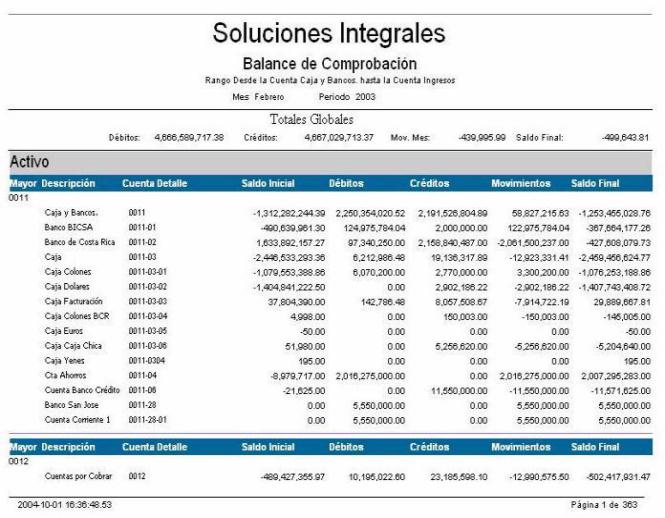

Para realizar la
consulta y/o impresión de un Balance de Comprobación Resumido, ingrese
los parámetros de Oficina, Período, Mes, Niveles de cuentas, Tipo de Moneda
y un rango de cuentas contables que el administrador requiera consultar
para una determinada empresa. Adicionalmente
seleccione el formato en que se presentará el reporte (HTML predeterminado,
Adobe PDF y Microsoft Excel
Figura 1. Consulta de Balance de comprobación.
Nota: Si no selecciona ningún parámetro el reporte se generará con todos los datos existentes.

Figura 2.Reporte Balance de comprobación.